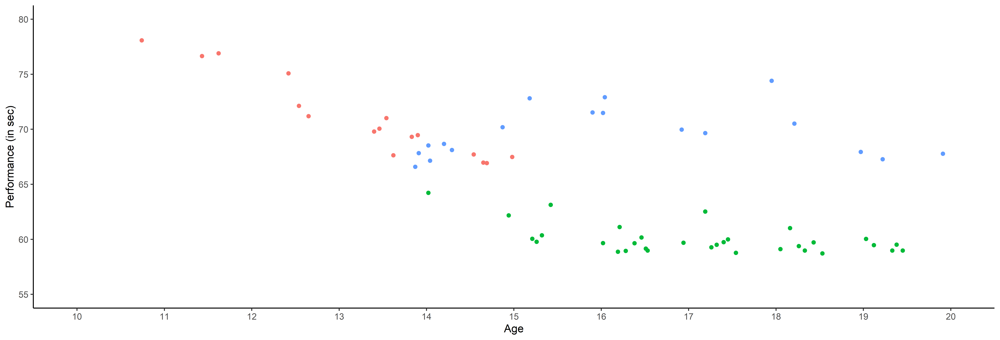
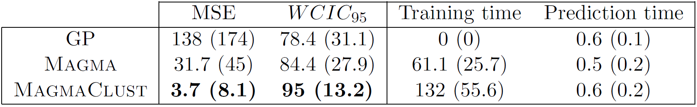

Multi-task Gaussian processes models for functional data and application to the prediction of swimming performances
Arthur Leroy - Department of Computer Science, The University of Sheffield
in collaboration with
- Servane Gey - MAP5, Université de Paris
- Benjamin Guedj - Inria - University College London
- Pierre Latouche - MAP5, Université de Paris
CMStatistics 2021 - London - 18/12/2021
Context
A problem:
-
Several papers (Boccia & al - 2017, Kearney & Hayes - 2018) point out limits of focusing on best performers in young categories.
-
Sport experts seek new objective criteria for talent identification.
An opportunity:
-
The French Swimming Federation (FFN) provides a massive database gathering most of the national competition’s results since 2002.

More problems than individual data
\[y_i = \color{red}{f}(x_i) + \epsilon\]
More problems than individual data
\[y_i^{\color{green}{k}} = \color{red}{f}(x_i^{\color{green}{k}}) + \epsilon\]
-
Training: learn \(\color{red}{f}\), create \(\color{green}{K}\) groups from a training dataset \(\{ (x_1, y_1), \dots, (x_M, y_M) \}\),
-
Prediction: for a new input \(x_*\), simultaneously compute membership probabilities for each group \(\tau_*^\color{green}{k}\) and cluster specific probabilistic predictions for the output \(p(y_*^{\color{green}{k}})\).

Gaussian process regression
No restrictions on \(\color{red}{f}\) but a prior distribution on a functional space: \(\color{red}{f} \sim \mathcal{GP}(0,C(\cdot,\cdot))\)

-
Powerful non parametric method offering probabilistic predictions,
-
Computational complexity in \(\mathcal{O}(N^3)\), with N the number of observations,
-
Correspondence with infinitly wide (deep) neural networks (Neal - 1994, Lee et al. - 2018).
Modelling and prediction with a unique GP

GPs are great for modelling time series although insufficient for long-term predictions.
Multi-task GP with common mean (Magma)
\[y_i = \mu_0 + f_i + \epsilon_i\]
with:
-
\(\mu_0 \sim \mathcal{GP}(m_0, K_{\theta_0}),\)
-
\(f_i \sim \mathcal{GP}(0, \Sigma_{\theta_i}), \ \perp \!\!\! \perp_i,\)
-
\(\epsilon_i \sim \mathcal{GP}(0, \sigma_i^2), \ \perp \!\!\! \perp_i.\)
It follows that:
\[y_i \mid \mu_0 \sim \mathcal{GP}(\mu_0, \Sigma_{\theta_i} + \sigma_i^2 I), \ \perp \!\!\! \perp_i\]
\(\rightarrow\) Unified GP framework with a common mean process \(\mu_0\), and individual-specific process \(f_i\),
\(\rightarrow\) Naturaly handles irregular grids of input data.
Hyper-parameters and \(\mu_0\)’s hyper-posterior are learned thanks to an EM algorithm.
Prediction
For a new individual, we observe some data \(y_*(\textbf{t}_*)\). Let us recall:
\[y_* \mid \mu_0 \sim \mathcal{GP}(\mu_0, \boldsymbol{\Psi}_{\theta_*, \sigma_*^2}), \ \perp \!\!\! \perp_i\]
Goals:
-
derive a analytical predictive distribution at arbitrary inputs \(\mathbf{t}^{p}\),
-
sharing the information from training individuals, stored in the mean process \(\mu_0\).
Difficulties:
-
the model is conditionned over \(\mu_0\), a latent, unobserved quantity,
-
defining the adequate target distribution is not straightforward,
-
working on a new grid of inputs \(\mathbf{t}^{p}_{*}= (\mathbf{t}_{*}, \mathbf{t}^{p})^{\intercal},\) potentially distinct from \(\mathbf{t}.\)
Prediction: the key idea
Defining a multi-task prior distribution by:
-
conditioning on training data,
-
integrating over \(\mu_0\)’s hyper-posterior distribution.
\[\begin{align}
p(y_* (\textbf{t}_*^{p}) \mid \textbf{y})
&= \int p\left(y_* (\textbf{t}_*^{p}) \mid \textbf{y}, \mu_0(\textbf{t}_*^{p})\right) p(\mu_0 (\textbf{t}_*^{p}) \mid \textbf{y}) \ d \mu_0(\mathbf{t}^{p}_{*}) \\
&= \int \underbrace{ p \left(y_* (\textbf{t}_*^{p}) \mid \mu_0 (\textbf{t}_*^{p}) \right)}_{\mathcal{N}(y_*; \mu_0, \Psi_*)} \ \underbrace{p(\mu_0 (\textbf{t}_*^{p}) \mid \textbf{y})}_{\mathcal{N}(\mu_0; \hat{m}_0, \hat{K})} \ d \mu_0(\mathbf{t}^{p}_{*}) \\
&= \mathcal{N}( \hat{m}_0 (\mathbf{t}^{p}_{*}), \Gamma)
\end{align}\]
A GIF is worth a thousand words

Magma + Clustering = MagmaClust
A unique underlying mean process might be too restrictive.
\(\rightarrow\) Mixture of multi-task GPs:
\[y_i = \mu_0 + f_i + \epsilon_i\]
with:
-
\(\color{green}{Z_{i}} \sim \mathcal{M}(1, \color{green}{\boldsymbol{\pi}}), \ \perp \!\!\! \perp_i,\)
- \(\mu_0 \sim \mathcal{GP}(m_0, K_{\theta_0}), \ \perp \!\!\! \perp_k,\)
- \(f_i \sim \mathcal{GP}(0, \Sigma_{\theta_i}), \ \perp \!\!\! \perp_i,\)
- \(\epsilon_i \sim \mathcal{GP}(0, \sigma_i^2), \ \perp \!\!\! \perp_i.\)
It follows that:
\[y_i \mid \mu_0 \sim \mathcal{GP}(\mu_0, \Psi_i), \ \perp \!\!\! \perp_i\]
Magma + Clustering = MagmaClust
A unique underlying mean process might be too restrictive.
\(\rightarrow\) Mixture of multi-task GPs:
\[y_i \mid \{\color{green}{Z_{ik}} = 1 \} = \mu_{\color{green}{k}} + f_i + \epsilon_i\]
with:
- \(\color{green}{Z_{i}} \sim \mathcal{M}(1, \color{green}{\boldsymbol{\pi}}), \ \perp \!\!\! \perp_i,\)
- \(\mu_{\color{green}{k}} \sim \mathcal{GP}(m_{\color{green}{k}}, \color{green}{C_{\gamma_{k}}})\ \perp \!\!\! \perp_{\color{green}{k}},\)
- \(f_i \sim \mathcal{GP}(0, \Sigma_{\theta_i}), \ \perp \!\!\! \perp_i,\)
- \(\epsilon_i \sim \mathcal{GP}(0, \sigma_i^2), \ \perp \!\!\! \perp_i.\)
It follows that:
\[y_i \mid \mu_0 \sim \mathcal{GP}(\mu_0, \Psi_i), \ \perp \!\!\! \perp_i\]
Magma + Clustering = MagmaClust
A unique underlying mean process might be too restrictive.
\(\rightarrow\) Mixture of multi-task GPs:
\[y_i \mid \{\color{green}{Z_{ik}} = 1 \} = \mu_{\color{green}{k}} + f_i + \epsilon_i\]
with:
- \(\color{green}{Z_{i}} \sim \mathcal{M}(1, \color{green}{\boldsymbol{\pi}}), \ \perp \!\!\! \perp_i,\)
- \(\mu_{\color{green}{k}} \sim \mathcal{GP}(m_{\color{green}{k}}, \color{green}{C_{\gamma_{k}}})\ \perp \!\!\! \perp_{\color{green}{k}},\)
- \(f_i \sim \mathcal{GP}(0, \Sigma_{\theta_i}), \ \perp \!\!\! \perp_i,\)
- \(\epsilon_i \sim \mathcal{GP}(0, \sigma_i^2), \ \perp \!\!\! \perp_i.\)
It follows that:
\[y_i \mid \{ \boldsymbol{\mu} , \color{green}{\boldsymbol{\pi}} \} \sim \sum\limits_{k=1}^K{ \color{green}{\pi_k} \ \mathcal{GP}\Big(\mu_{\color{green}{k}}, \Psi_i^\color{green}{k} \Big)}, \ \perp \!\!\! \perp_i\]
Learning
The integrated likelihood is not tractable anymore due to posterior dependencies between \( \boldsymbol{\mu} = \{\mu_\color{green}{k}\}_\color{green}{k}\) and \(\mathbf{Z}= \{Z_i\}_i\).
Variational inference still allows us to maintain closed-form approximations. For any distribution \(q\):
\[\log p(\textbf{y} \mid \Theta) = \mathcal{L}(q; \Theta) + KL \big( q \mid \mid p(\boldsymbol{\mu}, \boldsymbol{Z} \mid \textbf{y}, \Theta)\big)\]
The posterior independance is forced by an approximation assumption:
\[q(\boldsymbol{\mu}, \boldsymbol{Z}) = q_{\boldsymbol{\mu}}(\boldsymbol{\mu})q_{\boldsymbol{Z}}(\boldsymbol{Z}).\]
Maximising the lower bound \(\mathcal{L}(q; \Theta)\) induces natural factorisations over clusters and individuals for the variational distributions.
Variational EM
E step: \[
\begin{align}
\hat{q}_{\boldsymbol{\mu}}(\boldsymbol{\mu}) &= \color{green}{\prod\limits_{k = 1}^K} \mathcal{N}(\mu_\color{green}{k};\hat{m}_\color{green}{k}, \hat{\textbf{C}}_\color{green}{k}) , \hspace{2cm}
\hat{q}_{\boldsymbol{Z}}(\boldsymbol{Z}) = \prod\limits_{i = 1}^M \mathcal{M}(Z_i;1, \color{green}{\boldsymbol{\tau}_i})
\end{align}
\] M step:
\[
\begin{align*}
\hat{\Theta}
&= \sum\limits_{k = 1}^{K}\ \mathcal{N} \left( \hat{m}_k; \ m_k, \boldsymbol{C}_{\color{green}{\gamma_k}} \right) - \dfrac{1}{2} \textrm{tr}\left( \mathbf{\hat{C}}_k\boldsymbol{C}_{\color{green}{\gamma_k}}^{-1}\right) \\
& \hspace{1cm} + \sum\limits_{k = 1}^{K}\sum\limits_{i = 1}^{M}\tau_{ik}\ \mathcal{N} \left( \mathbf{y}_i; \ \hat{m}_k, \boldsymbol{\Psi}_{\color{brown}{\theta_i}, \color{brown}{\sigma_i^2}} \right) - \dfrac{1}{2} \textrm{tr}\left( \mathbf{\hat{C}}_k\boldsymbol{\Psi}_{\color{brown}{\theta_i}, \color{brown}{\sigma_i^2}}^{-1}\right) \\
& \hspace{1cm} + \sum\limits_{k = 1}^{K}\sum\limits_{i = 1}^{M}\tau_{ik}\log \color{green}{\pi_{k}}
\end{align*}
\]
Prediction
-
EM for estimating \(p(\color{green}{Z_*} \mid \textbf{y}, \hat{\Theta})\), \(\hat{\theta}_*\) and \(\hat{\sigma}_*^2\),
-
Multi-task prior for each cluster:
\[p \left( \begin{bmatrix}
y_*(\color{red}{\mathbf{t}_{*}}) \\
y_*(\color{blue}{\mathbf{t}^{p}}) \\
\end{bmatrix} \mid \color{green}{Z_{*k}} = 1, \textbf{y} \right) = \mathcal{N} \left(
\begin{bmatrix}
y_*(\color{red}{\mathbf{t}_{*}}) \\
y_*(\color{blue}{\mathbf{t}^{p}}) \\
\end{bmatrix}; \
\begin{bmatrix}
\hat{m}_\color{green}{k}(\color{red}{\mathbf{t}_{*}}) \\
\hat{m}_\color{green}{k}(\color{blue}{\mathbf{t}^{p}}) \\
\end{bmatrix},
\begin{pmatrix}
\Gamma_{\color{red}{**}}^\color{green}{k} & \Gamma_{\color{red}{*}\color{blue}{p}}^\color{green}{k} \\
\Gamma_{\color{blue}{p}\color{red}{*}}^\color{green}{k} & \Gamma_{\color{blue}{pp}}^\color{green}{k}
\end{pmatrix} \right), \forall \color{green}{k},\]
-
Multi-task posterior for each cluster:
\[
p(y_*(\color{blue}{\mathbf{t}^{p}}) \mid \color{green}{Z_{*k}} = 1, y_*(\color{red}{\mathbf{t}_{*}}), \textbf{y}) = \mathcal{N} \Big( y_*(\color{blue}{\mathbf{t}^{p}}); \ \hat{\mu}_{*}^\color{green}{k}(\color{blue}{\mathbf{t}^{p}}) , \hat{\Gamma}_{\color{blue}{pp}}^\color{green}{k} \Big), \forall \color{green}{k},
\]
\(\hat{\mu}_{*}^\color{green}{k}(\color{blue}{\mathbf{t}^{p}}) = \hat{m}_\color{green}{k}(\color{blue}{\mathbf{t}^{p}}) + \Gamma^\color{green}{k}_{\color{blue}{p}\color{red}{*}} {\Gamma^\color{green}{k}_{\color{red}{**}}}^{-1} (y_*(\color{red}{\mathbf{t}_{*}}) - \hat{m}_\color{green}{k} (\color{red}{\mathbf{t}_{*}}))\)
\(\hat{\Gamma}_{\color{blue}{pp}}^\color{green}{k} = \Gamma_{\color{blue}{pp}}^\color{green}{k} - \Gamma_{\color{blue}{p}\color{red}{*}}^\color{green}{k} {\Gamma^{\color{green}{k}}_{\color{red}{**}}}^{-1} \Gamma^{\color{green}{k}}_{\color{red}{*}\color{blue}{p}}\)
-
Predictive multi-task GPs mixture:
\[p(y_*(\color{blue}{\textbf{t}^p}) \mid y_*(\color{red}{\textbf{t}_*}), \textbf{y}) = \color{green}{\sum\limits_{k = 1}^{K} \tau_{*k}} \ \mathcal{N} \big( y_*(\color{blue}{\mathbf{t}^{p}}); \ \hat{\mu}_{*}^\color{green}{k}(\textbf{t}^p) , \hat{\Gamma}_{pp}^\color{green}{k}(\textbf{t}^p) \big).\]
Illustration: Magma vs MagmaClust


Did I mention that I like GIFs ?

Perspectives
-
Release the R package MagmaClustR on the CRAN (soon!),
-
Enable association with sparse GP approximations,
-
Evaluate the predictions on prospective real-life studies.
References:
-
Neal - Priors for infinite networks - University of Toronto - 1994
-
Rasmussen and Williams - Gaussian Processes for machine learning - MIT Press - 2006
-
Lee et al. - Deep Neural Networks as Gaussian Processes - ICLR - 2018
-
Leroy et al. - Magma: Inference and Prediction with Multi-Task Gaussian Processes - Under review - 2020
-
Leroy et al. - Cluster-Specific Predictions with Multi-Task Gaussian Processes - Under review - 2020
Thank you for your attention
Model selection in MagmaClust
After convergence of the VEM algorithm, a variational-BIC expression can be derived as:
\[\begin{align*}
V_{BIC}
&= \mathcal{L}(\hat{q}; \hat{\Theta}) - \dfrac{\mathrm{card}\{HP \}}{2} \log M \\
&= \sum\limits_{i=1}^M \sum\limits_{k=1}^K \left[ \tau_{ik} \left( \log \mathcal{N}\left( \mathbf{y}_i; \hat{m}_k(\mathbf{t}_i), {\boldsymbol{\Psi}_{\hat{\theta}_i, \hat{\sigma}_i^2}^{\mathbf{t}_i}} \right) - \dfrac{1}{2} Tr ( \mathbf{\hat{C}}_k^{\mathbf{t}} {\boldsymbol{\Psi}_{\hat{\theta}_i, \hat{\sigma}_i^2}^{\mathbf{t}_i}}^{-1}) + \log \dfrac{\hat{\pi_k}}{\tau_{ik}} \right) \right] \\
& \hspace{0.5cm} + \sum\limits_{k=1}^K \Bigg[ \log \mathcal{N} \left( \hat{m}_k(\textbf{t}); m_k(\mathbf{t}) , {\mathbf{C}_{\hat{\gamma}_k}^{\mathbf{t}^{p}_{*}}} \right) - \dfrac{1}{2} Tr( \mathbf{\hat{C}}_k^{\mathbf{t}} {\mathbf{C}_{\hat{\gamma}_k}^{\mathbf{t}^{p}_{*}}}^{-1}) \\
& \hspace{2cm} + \dfrac{1}{2} \log \mid \mathbf{\hat{C}}_k^{\mathbf{t}} \mid + N \log 2 \pi + N \Bigg] - \dfrac{\alpha_i + \alpha_k + (K - 1)}{2} \log M.
\end{align*}\]
Appendix
Two important prediction steps of Magma have been omitted for clarity:
- Recomputing the hyper-posterior distribution on the new grid: \[
p\left( \mu_0 (\textbf{t}_*^{p}) \mid \textbf{y} \right),
\]
- Estimating the hyper-parameters of the new individual: \[
\hat{\theta}_*, \hat{\sigma}_*^2 = \underset{\theta_*, \sigma_*^2}{\arg\max} \ p(y_* (\textbf{t}_*) \mid \textbf{y}, \theta_*, \sigma_*^2 ).
\]
The computational complexity for learning is given by:
- Magma: \[
\mathcal{O}(M\times N_i^3 + N^3)
\]
- MagmaClust: \[
\mathcal{O}(M\times N_i^3 + K \times N^3)
\] ## Appendix: Clustering and prediction performances


Appendix: MagmaClust, remaining clusters